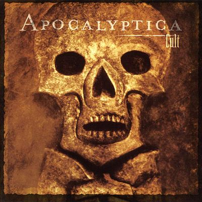
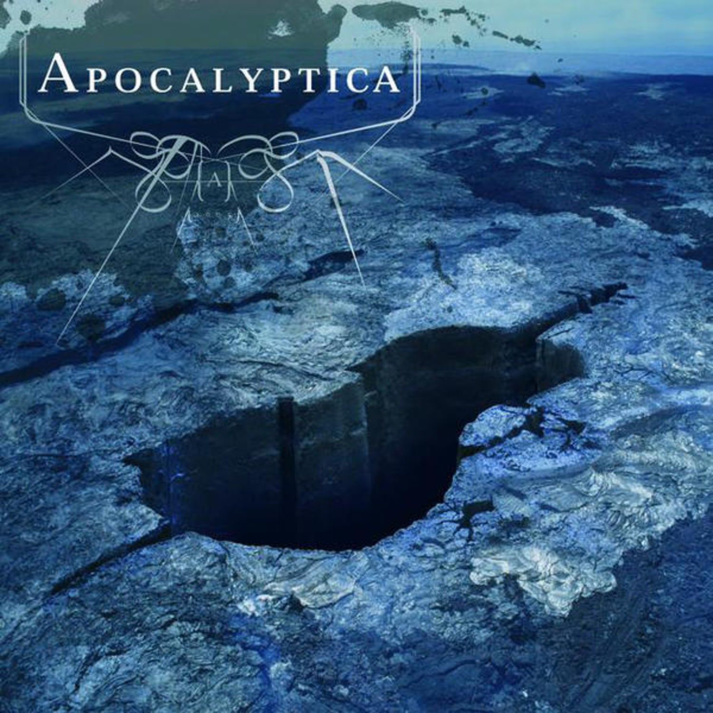
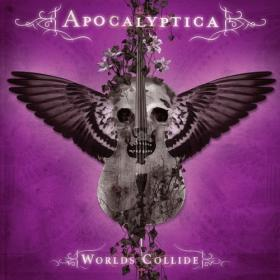
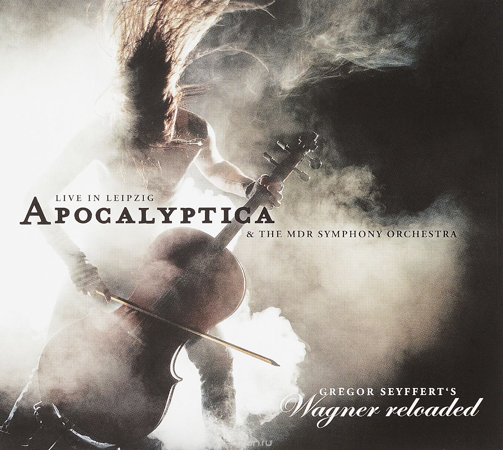

|  |  |  |  |
 |
| Cult (2002) | Apocalyptica (2006) | Worlds Collide (2009) | 7th Symphony (2010) | Wagner Reloaded (2013) |
| Apocalyptica — финская группа, исполняющая метал на виолончелях. В состав группы входят 3 виолончелиста и барабанщик. Первоначально прославившись инструментальными кавер-версиями композиций известных трэш-метал-групп, в дальнейшем Apocalyptica начала выпускать материал собственного сочинения. Жанр группы не поддаётся однозначному определению, но чаще всего его характеризуют как симфонический метал или виолончельный метал. | Главная | |||||
| Nightwish | ||||||
| Within Temptation | ||||||
|
Epica | |||||
|
Therion |